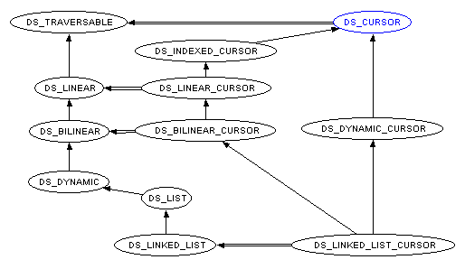

| Traversable Containers |

Data structures such as lists may want to provide their clients with a way to access and traverse their elements. This notion of traversal mechanism seems to be simple to design: one just has to add, using inheritance, the traversal operation features to the traversable container interfaces. However some data structures might have different traversal policies. For example, a tree structure might be traversed in preorder, postorder or breadth-first depending on its clients' needs. Including the operations for such different traversals in the data structures' class interface is hardly possible for two reasons: the class interface will rapidly be too complex, making more important features difficult to spot; and one cannot anticipate all possible traversal policies relevant to all clients of a data structure. Another important facility to take into account is to allow a data structure to be traversed more than once at the same time.
The use of the iterator pattern as described in Design Patterns solves the concerns expressed above. The key idea of this pattern is to take the responsibility for access and traversal out of the data structure and put it into a cursor object. This way, it is very straightforward to traverse the same data structure at once: each cursor just has to keep track of its own traversal state. Moreover the traversal algorithm being held in cursors, it is very easy to switch from one traversal policy to another for a given data structure just by using a different kind of cursor.
Typically, traversable structures are heirs of class DS_TRAVERSABLE. This class is only responsible for providing its clients with new cursors (instances of class DS_CURSOR). This is achieved through feature new_cursor. Traversable structures are also equipped with the boolean-valued query valid_cursor providing a means to check whether a given cursor can be used to traverse the current container. Cursors supplied by one data structure cannot be used to traverse another structure, even if the structures are of the same type. This is enforced by the fact that each cursor knows about the structure it is traversing. Apart from this container reference, class DS_CURSOR has a boolean-valued query off stating whether there is an element at the current cursor position, and item returning this element. All features in the cursor classes have a precondition is_valid ensuring that the cursor is still synchronized with the structure. For example a cursor pointing to an item which has been removed from the container won't be valid any more.

|
Copyright © 1997, Eric
Bezault mailto:ericb@gobo.demon.co.uk http://www.gobo.demon.co.uk Last Updated: 17 December 1997 |